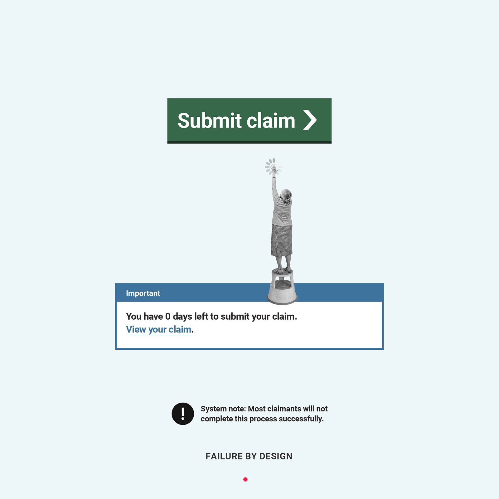
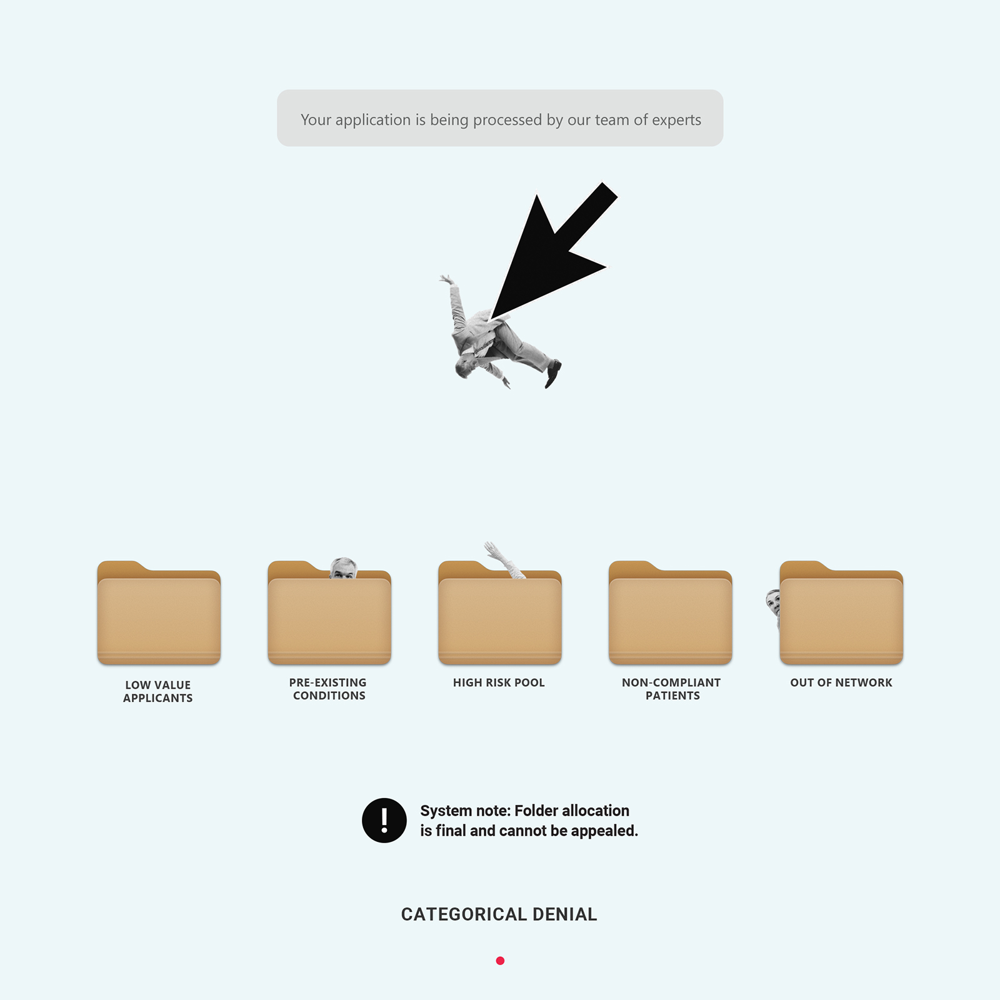
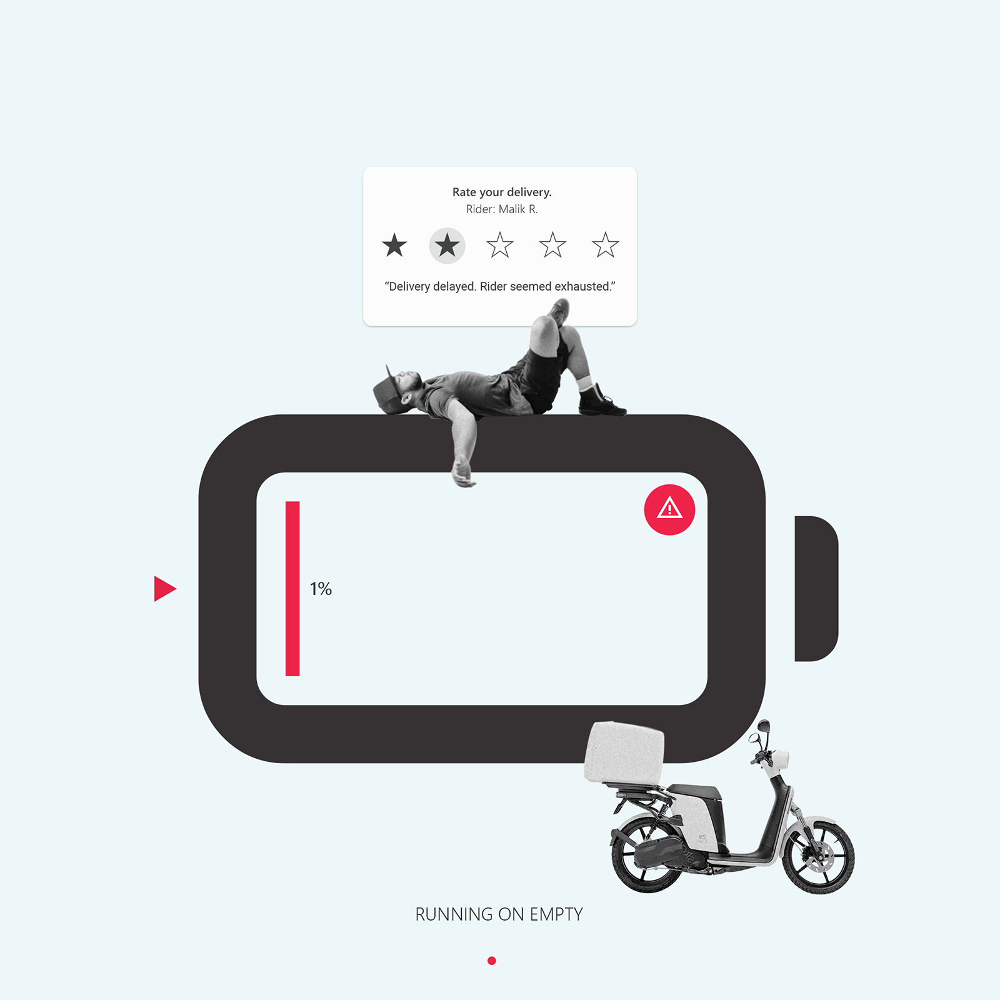
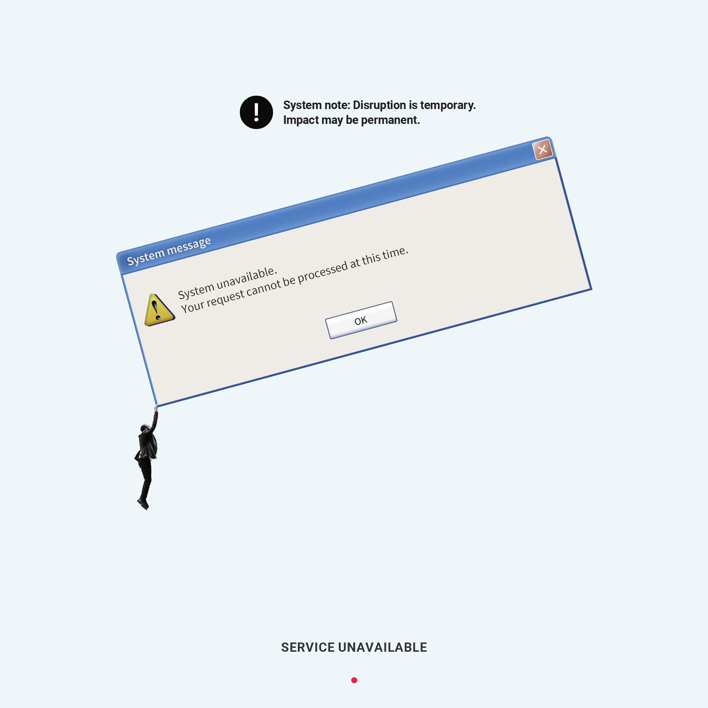
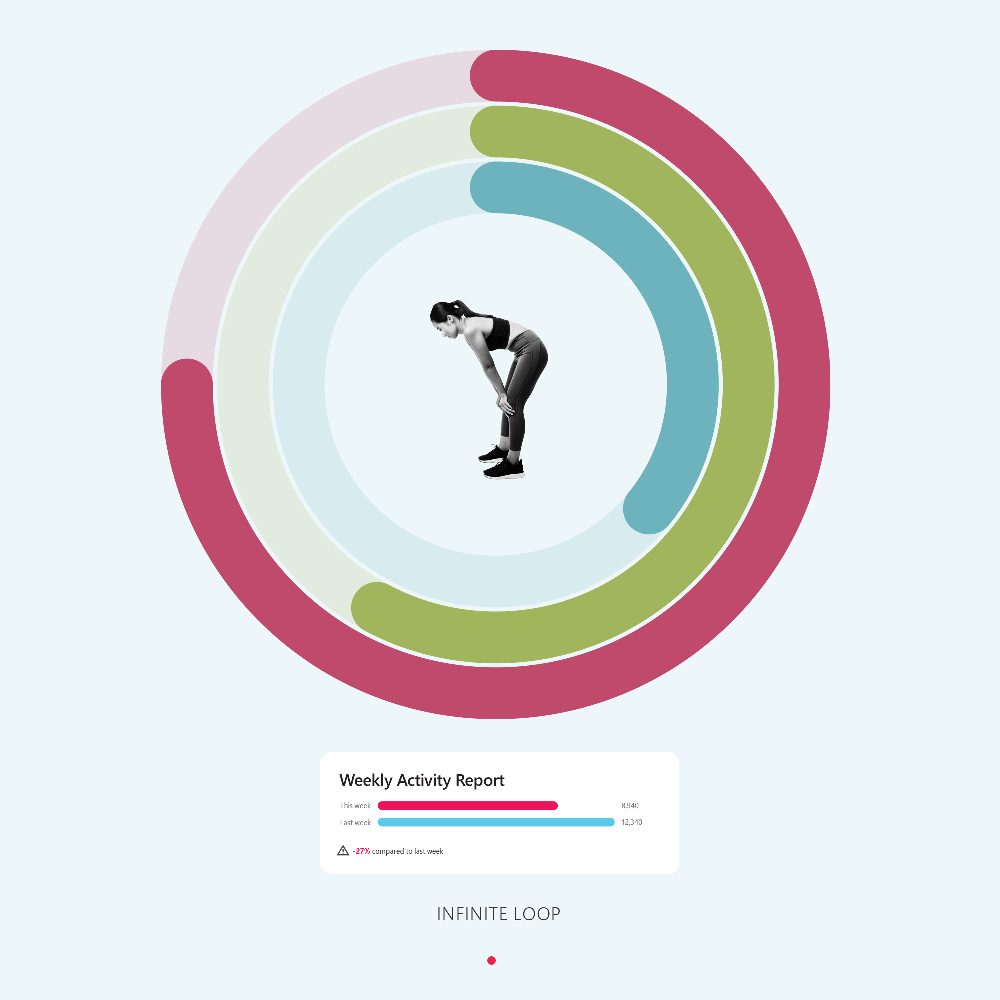
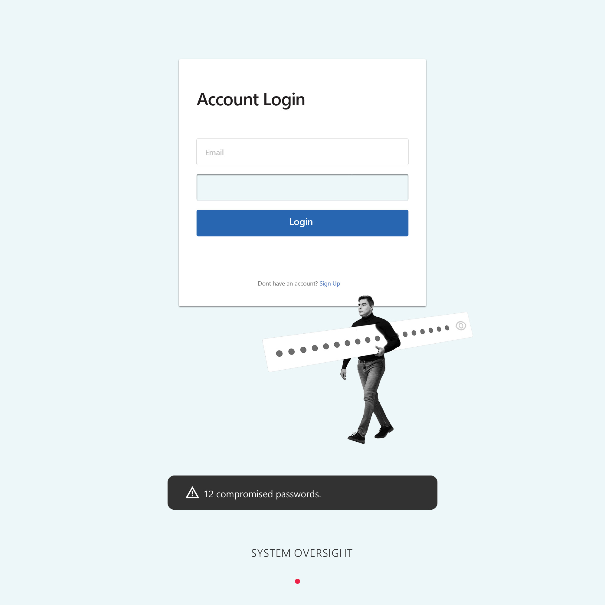
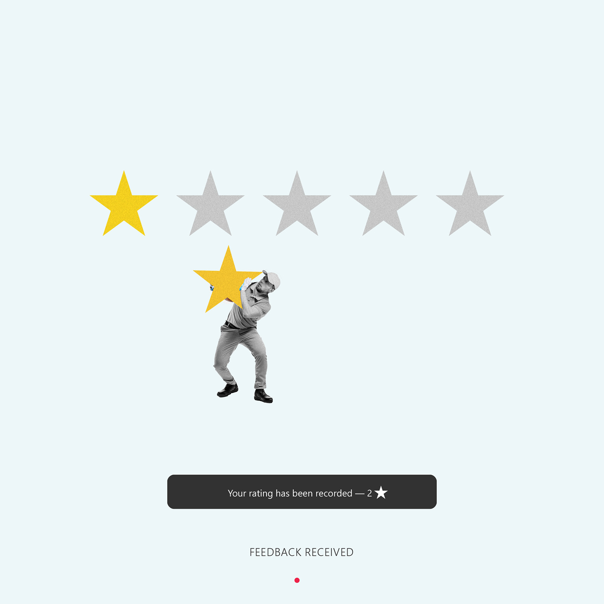

Microsystems of Control
Collage work exploring systems, interfaces, and the mechanisms that shape behaviour.







Collage work exploring systems, interfaces, and the mechanisms that shape behaviour.






